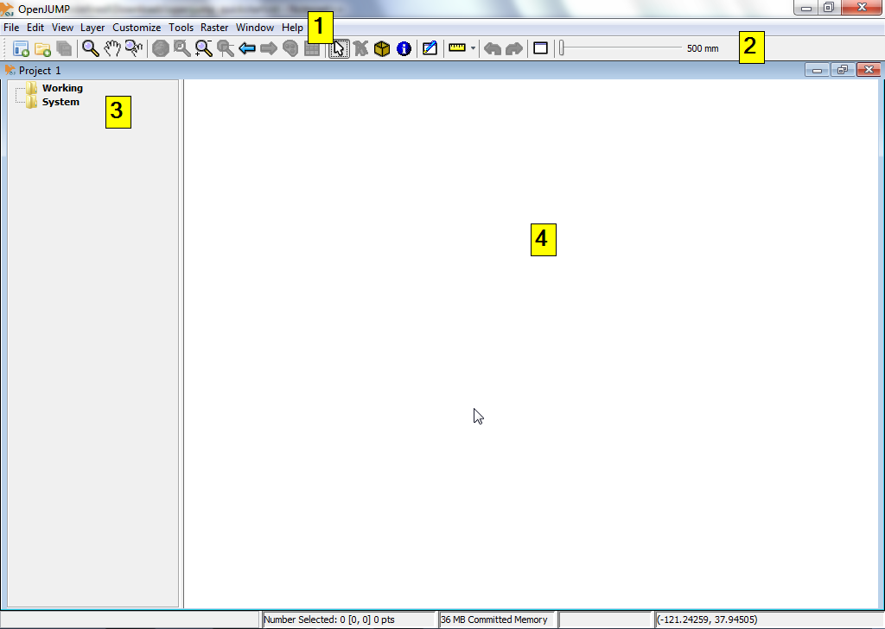

OpenJUMP GIS gyorstalpaló¶
Az OpenJUMP egy asztali GIS program vektor adatok egyszerű megjelenítését és szerkesztését teszi lehetővé. A PLUS kiadás a raszter adatok elemzését is támogatja.
OpenJUMP indítás¶
Az asztalról válassza .
Az OPenJUMP felhasználói interfész négy (4) alapkomponensből áll.
[1] Az első a felső menüsor a legtöbb funkció eléréséhez.
[2] A második a fő eszközsor a menüsor alatt. A gombok a legfontosabb megjelenítő és navigációs funkciókhoz biztosít hozzáférést.
[3] A harmadik a réteg lista bal oldalon, mely az aktív projekthez tartozó rétegek listáját mutatja.
[4] A negyedik a térkép nézet. Ez az aktuális térkép, ahol az egyes rétegek grafikus megjelenítése található,
Végül van egy információs sor alul, mely az egér koordinátákat, a feldolgozás állapotát és a memória használatot jeleníti meg. A projekt ablak egy réteg listát és egy réteg nézetet tartalmaz. Az OpenJUMP minden futó példánya több projektet tartalmazhat. Ebben a gyorstalpalóban csak egy ablakkal dolgozunk.
{kind=link}
ESRI shape fájl megnyitása¶
Az OpenJUMP felső menüsorából válassza a menüpontot. Ez egy párbeszédablakot nyit meg, melyben térinformatikai adatokat tartalmazó fájlokat nyithat meg.
Tallózzon egy ESRI shape fájlhoz. Keressen egy fájlt .shp kiterjesztéssel (pl. /home/user/data/natural_earth2/ne_10m_admin_0_countries.shp a LiveDVD-n).
Válassza ki a fájlt és kattintson a Finish gombot a párbeszédablakban. Néhány pillanat múlva látni fogja a shape adatait a térkép nézetben. Egy új réteget jön létre az adataihoz a réteg listában. A réteg neve megegyezik a shape fájl nevével.

Javaslat
Egy másik gyorsabb lehetőség a shape fájl megragadása és rádobása a réteg nézetre.
Egy réteg stílus beállítása¶
A réteg listában jobb kattintás a réteg nevén. Ez egy felbukkanó menüt jelenít meg.
Válassza a -t. A stílus módosító ablak öt fület tartalmaz, melyek segítségével módosíthatja a réteg megjelenését a térkép nézetben. Ebbe beletartozik a vonal szín, a kitöltés szín, vonal stílus és vastagság, átlátszóság, címkék hozzáadása és a minimum és maximális méretarány amiben a réteg megjelenik.


Térképi elemek geometriájának szerkesztése¶
A réteg listában jobb kattintás a réteg nevén. Ez egy felbukkanó menüt jelenít meg.
Kattintson az „Editable” menüpontra, így egy pipa jelenik meg. Ez egy új lebegő eszközsort jelenít meg a térkép nézet felett a jobb oldalon. Ez az eszközsor a gombok egy halmazát tartalmazza, melyeket a térképi elemek geometriájának szerkesztésére használhat.


Próbáljunk ki egy gyors szerkesztést. Először ki kell választanunk egy geometriát, majd a geometria egy pontját elmozdítjuk. Ehhez először kattintsunk az egér mutatót tartalmazó gombra a szerkesztés eszközsorban (bal-felső sarok).
Tegye aktívvá és kattintson egy elemre a Térkép nézetben a kiválasztásához. Ha működött a kiválasztás, akkor az elem színe sárgára változik és sárga négyzetek jelennek (csúcspontnál) meg az elem geometriájának összes töréspontjában.

Ezután kattintson a kék keresztet középen sárga négyzettel tartalmazó gombra, a Move Vertex Tool-ra (az egeret a gombokon tartva a gomb leírását kapjuk). Ha az egeret a térkép nézetbe húzza az egérmutató kis fekete keresztté változik.

Használjuk a korábban kiválasztott geometria egy töréspontjának mozgatására, kattintson egy töréspontra és húzza el azt (hagyja az egérgombot nyomva).

Mi a következő?¶
Ez csak az első lépés az úton az OpenJUMP használatához. Sokkal több anyag maradt, amit felfedezhet.
Az OpenJUMP-hoz oktatóanyagokat innen tölthet le: https://sourceforge.net/projects/jump-pilot/files/Documentation/
Az OpenJUMP wikit itt olvashatja: http://ojwiki.soldin.de/index.php?title=Main_Page
Gyorsan segítséget kaphat az OpenJUMP felhasználók levelező listáján: https://groups.google.com/forum/#!forum/openjump-users
A legújabb OpenJUMP verzió itt található: https://sourceforge.net/projects/jump-pilot/files/OpenJUMP/